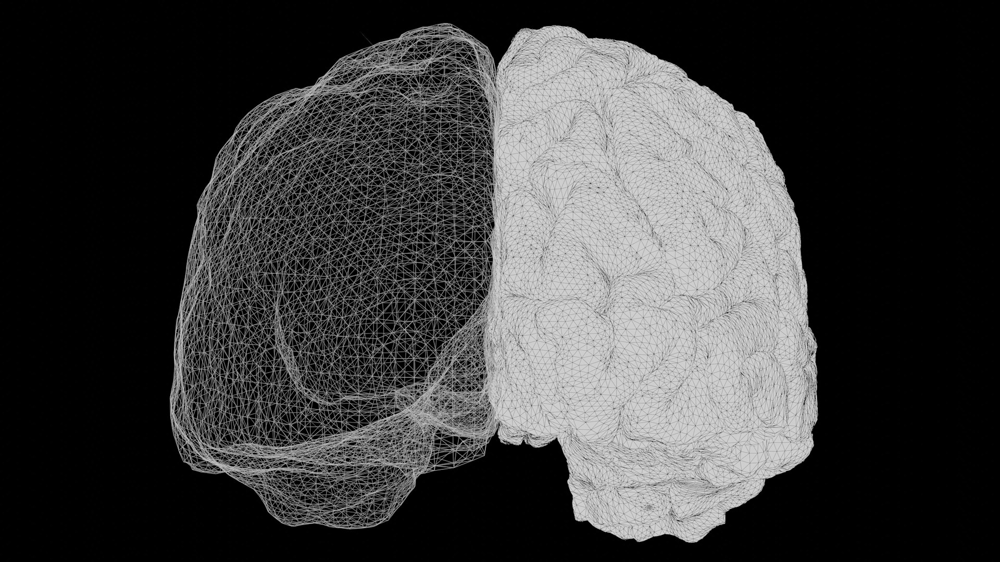

Alejandro Montenegro Taborda

¿Tiene el tiempo gramatical una huella propia en la corteza humana?
Codificación cortical por bandas de las formas verbales personales de pasado y de no pasado en inglés durante la escucha de relatos orales completos.
Durante décadas se estudió el lenguaje en el cerebro presentando palabras sueltas u oraciones de laboratorio diseñadas para cambiar un solo detalle a la vez. Seguir la actividad de casi un millón de vóxeles corticales en diez personas mientras escuchan entre cinco y dieciséis horas de historias reales permite formular una pregunta directa: cuando comprendemos un relato hablado, ¿recluta el tiempo gramatical una región propia de la corteza o viaja integrado en el procesamiento léxico y sintáctico de cada oración?
Del laboratorio al relato continuo
Estudiar cómo procesa el cerebro la gramática exige elegir entre dos caminos con ventajas y costos opuestos. En los experimentos clásicos de resonancia magnética funcional, el participante escucha listas de oraciones artificiales donde todo permanece idéntico salvo la terminación de un verbo. Ese diseño simplifica la estadística, pero sacrifica la naturaleza real del lenguaje humano, donde cada frase se apoya en varios minutos previos de contexto narrativo, entonación y expectativa.
El camino alternativo consiste en registrar el cerebro mientras las personas escuchan relatos autobiográficos completos contados de corrido, como las grabaciones en vivo de The Moth Radio Hour. Allí la comprensión ocurre de forma espontánea, aunque surge un obstáculo severo: en el habla natural todas las propiedades del idioma ocurren mezcladas en los mismos segundos. El volumen de la voz, los sonidos articulados, la frecuencia de uso de cada palabra, su categoría gramatical, la estructura de la oración y el tema de la escena cambian de manera simultánea.
«I reached over, and secretly undid my seatbelt. And when his foot hit the brake at the red light, I flung open the door and I ran.»
«Me estiré hacia el lado y desabroché en secreto mi cinturón de seguridad. Y cuando su pie pisó el freno en el semáforo en rojo, abrí de golpe la puerta y corrí.»
Basta escuchar esos primeros nueve segundos para notar cuántas tareas resuelve el oyente a la vez. La corteza auditiva sigue los cambios de energía acústica e identifica consonantes y vocales; las redes léxicas reconocen palabras cotidianas e infrecuentes; el procesamiento sintáctico enlaza quién ejecuta cada acción y amplias zonas asociativas reconstruyen la escena del escape. Al mismo tiempo, formas verbales personales como reached, undid, hit, flung y ran llevan flexión de pasado, ubicando el episodio antes del momento en que habla la narradora.
Para separar esas pistas superpuestas sin romper el relato, descomponemos cada historia en siete bandas paralelas que suman 46 variables a lo largo del tiempo. Las primeras seis bandas forman el Modelo de Control (44 variables): espectro acústico, fonología, estadística léxica, categorías gramaticales con filtro de auxiliares, sintaxis de dependencias y semántica temática de la oración. La séptima banda agrega las dos variables de tiempo gramatical (past y non_past) para formar el Modelo Completo (46 variables).
Entrenado por separado en cada cubo milimétrico de tejido (vóxel), este marco alcanza a predecir hasta el 53% de la señal cerebral reproducible ante una historia nueva en las redes auditivas y del lenguaje. Contar con un instrumento así de sensible permite plantear el experimento central de este trabajo: si comparamos en cada vóxel el acierto del Modelo Completo frente al del Modelo de Control, ¿aparecerá un aporte único del tiempo gramatical en alguna región de la corteza, o podrán las seis bandas de control predecir por sí solas esa misma actividad cerebral?
La partitura multipista del relato: 7 bandas simultáneas avanzando de izquierda a derecha hacia la corteza
Tiempo mental y tiempo gramatical en inglés
Para entender con exactitud qué mide la Banda 7 conviene distinguir dos conceptos que en español suelen compartir la palabra «tiempo». Uno es el tiempo mental o cronológico (en inglés, time): nuestra ubicación general de los sucesos en el ayer, el ahora o el mañana, guiada por el conocimiento de la historia o por adverbios como ayer o pronto. El otro es el tiempo gramatical (tense): la marca morfológica que una lengua imprime sobre sus formas verbales personales (los verbos conjugados) para situar un evento respecto al instante en que habla el narrador.
En español, el verbo modifica su terminación para distinguir pasado (llegué), presente (llego) y futuro (llegaré). El sistema verbal del inglés sigue una regla distinta: carece de una flexión propia de futuro en la raíz del verbo. Cuando un hablante de inglés se refiere a un hecho posterior al momento del habla, emplea auxiliares modales (como will, «iré»), construcciones perifrásticas (como going to, «voy a») o formas conjugadas de no pasado apoyadas en el contexto de la frase.
«He's gonna be [nice] when I get home.»
«Se va a portar bien cuando yo llegue a casa.»
Al pronunciar esa frase en mitad de la noche, la narradora todavía camina lejos de su casa. En su tiempo mental esa llegada ocurre en el futuro, pero la forma verbal personal get lleva morfología de no pasado. También ocurre el cruce inverso durante el llamado presente histórico: un recuerdo ocurrido años atrás se relata con verbos en no pasado para acercar la escena al oyente. Por esa razón, en lingüística del inglés el tiempo gramatical se organiza como una oposición binaria entre pasado (con flexión de pasado) y no pasado (con flexión de no pasado).
Formas verbales personales, auxiliares y contracciones orales
En la conversación espontánea tampoco basta con mirar los verbos que describen acciones físicas. Las formas verbales no personales (infinitivos como to walk, gerundios como crying y participios como smoked en have smoked) nombran la actividad, pero no portan tiempo gramatical propio. En frases progresivas, perfectas o negativas, el tiempo gramatical recae entero sobre un auxiliar breve, con frecuencia unido al pronombre dentro de una contracción hablada.
«I was crying.» → Pasado
«She's crying.» → No pasado
«Yo estaba llorando.» / «Ella está llorando.» (contracción oral de she is)
En ambos momentos el gerundio no personal crying es idéntico. Toda la diferencia entre pasado y no pasado viaja en las formas verbales personales del auxiliar be (was frente a 's), pronunciadas en poco más de una décima de segundo.
Al auditar las 84 historias validadas del corpus (158,462 palabras alineadas), se contabilizaron exactamente 20,921 formas verbales personales con marca de tiempo gramatical. El conjunto completo muestra una proporción muy equilibrada: 10,900 formas de pasado (52.10%) frente a 10,021 formas de no pasado (47.90%).
Ese censo dejó a la vista dos rasgos del inglés hablado que guiaron el diseño del Modelo de Control. Primero, más de la mitad de todas las formas verbales personales con tiempo (51.78%, 10,832 casos) corresponde a auxiliares y cópulas de uso muy frecuente (be, have, do), frente a un 48.22% en verbos léxicos; por eso la Banda 4 incorpora la variable auxiliary_modal para descontar su condición de clase gramatical cerrada. Segundo, casi una de cada cinco apariciones temporales del corpus (19.08%, 3,992 casos; y el 25.89% en la historia de prueba) ocurre dentro de una contracción oral como didn't, don't o she's, lo que exige analizar cada palabra hablada junto con sus partes contraídas.
Clasificación de las formas verbales en el relato real y censo de las 20,921 ocurrencias del corpus
0.01 a 13.25 s «I over, and secretly my seatbelt [...] I .»
«Me estiré hacia el lado y desabroché en secreto mi cinturón de seguridad [...] Yo estaba llorando.»
93.10 a 109.60 s «...hours I I of freedom [...] I a light [...] I a figure.»
«...las horas de libertad que sabía que tendría [...] No tengo fuego [...] Veo una silueta.»
117.92 a 132.56 s «The person closer and I [...] she .»
«La persona se acerca y pude ver [...] ella está llorando.»
Cómo se construye cada una de las siete bandas
Los archivos de alineación temporal del repositorio indican en qué centésima de segundo empieza y termina cada fonema y cada palabra, pero entregan el texto corrido en minúsculas y sin signos de puntuación. Analizar gramaticalmente miles de palabras sin puntos ni comas deteriora los árboles sintácticos, y partir frases solo por la duración de los silencios falla cada vez que un narrador toma aire en medio de una oración o enlaza dos ideas sin pausa.
Para reconstruir las oraciones respetando intactos los tiempos originales del audio, se limpiaron las marcas de respiración y risa y se aplicó un modelo neuronal bidireccional (mmBERT) entrenado en discurso oral que restaura mayúsculas y puntuación palabra por palabra. Sobre esa base, muestreada cien veces por segundo (cada 10 milisegundos), se construyen las seis bandas del Modelo de Control (44 variables) cuidando que ninguna copie por accidente la señal de la Banda 7:
- Banda 1 · Espectro acústico WAV (7 variables): Mide en la onda de audio la energía global (rms_energy) y seis franjas de frecuencia en escala Mel entre 80 y 8,000 Hz. Ese techo de 8,000 Hz coincide con la respuesta plana de los auriculares intraaurales Sensimetrics S14 empleados en el resonador y cubre la zona aguda (4,000 a 8,000 Hz) donde suenan terminaciones regulares como la /t/ final de smoked o la /z/ de comes.
- Banda 2 · Fonología articulatoria (12 variables): Registra vocalicidad, vibración de cuerdas vocales, cuatro puntos de contacto y seis modos de articulación de cada fonema, sin columnas opuestas repetidas y tratando la consonante /h/ como fricativa glotal.
- Banda 3 · Estadística léxica (4 variables): Cuantifica presencia de palabra, frecuencia habitual de uso en inglés (escala Zipf), cantidad de letras y duración pronunciada en segundos, diferenciando vocablos breves y cotidianos como was o have frente a palabras menos frecuentes como cigarettes.
- Banda 4 · Categorías gramaticales y auxiliaridad (9 variables): Identifica siete clases de palabras, envía las formas verbales no personales a non_finite_verb y activa auxiliary_modal ante auxiliares, cópulas y modales para descontar su función estructural cerrada.
- Banda 5 · Sintaxis de dependencias (2 variables): Calcula la distancia lineal hacia la palabra regente y la profundidad en el árbol de la oración. Excluye a propósito el indicador de raíz oracional (is_root) porque ese puesto recae casi siempre sobre el verbo personal principal y duplicaría de manera artificial a la Banda 7.
Por qué la Banda 6 usa raíces sin tiempo en lugar de grandes modelos de lenguaje
La sexta banda de control debe resumir de qué trata cada oración. Aunque hoy es habitual extraer vectores de grandes redes neuronales del lenguaje para predecir actividad cerebral, usar esas representaciones internas como control impide evaluar morfología verbal: sus vectores mezclan el tema de la escena con el orden sintáctico y con el propio tiempo gramatical de la frase. Si el Modelo de Control ya lleva codificado el pasado y el no pasado dentro de su banda semántica, restarlo borra de antemano el fenómeno estudiado.
Para representar el tema sin filtrar marcas verbales ni tocar el relato de prueba, se entrenó un Análisis Semántico Latente (LSA) de 10 variables exclusivamente sobre las 83 historias de entrenamiento, convirtiendo antes cada palabra a su lema o raíz neutra: tanto smoked como smokes ingresan bajo la misma raíz sin tiempo smoke. Sumadas las 44 variables de control y las 2 variables de la Banda 7 (past y non_past), cada relato queda descrito a 100 Hz por las 46 variables del Modelo Completo.
El taller de las 7 bandas: cómo se transforma un mismo pasaje oral en cada grupo de variables
Pasaje real analizado (9:21 a 9:25 de Where There's Smoke): «I smoked seven cigarettes [...] people who have never smoked» («Me fumé los siete cigarrillos [...] la gente que nunca ha fumado»).
El reloj de la sangre y la penalización por banda
El habla y la resonancia magnética funcional avanzan a velocidades muy distintas. Mientras los fonemas y las formas verbales cambian en décimas de segundo, el escáner no mide impulsos eléctricos instantáneos, sino cambios locales de oxígeno en la sangre (la señal BOLD). Cuando un grupo de neuronas responde a una palabra, el flujo sanguíneo vecino sube con lentitud, alcanza su cumbre entre cinco y seis segundos después del sonido y tarda cerca de treinta segundos en regresar al reposo. Además, el resonador toma una captura completa del cerebro cada dos segundos (un intervalo denominado TR).
Ese ritmo lento produce dos efectos clave en la escucha natural. Primero, cada una de las 46 variables medidas a 100 pasos por segundo debe transformarse con esa curva sanguínea de 32 segundos y leerse cada dos segundos para hablar el mismo idioma temporal del escáner. Segundo, cuando en una conversación suenan varios verbos seguidos en pocos segundos, sus olas individuales de oxígeno se suman en una sola marea continua antes de que el aparato tome la siguiente captura.
Del sonido rápido a la ola lenta de oxígeno: un verbo aislado frente a varios verbos seguidos
Enfocar el reloj del escáner: la prueba empírica de los 12.0 segundos
Transformar las variables al ritmo sanguíneo no basta si el audio y el escáner arrancan desfasados. En el repositorio público de datos cerebrales se recortaron los volúmenes iniciales de cada grabación para descartar los segundos de estabilización magnética del equipo. Un desajuste de apenas dos o cuatro segundos al alinear las pistas con el cerebro arruinaría por completo la predicción de cualquier palabra rápida.
En lugar de asumir un número fijo en el papel, se midió directamente en los diez participantes qué ocurría al desplazar el punto de inicio desde 0 hasta 20 segundos en pasos de dos segundos sobre el relato de prueba. La respuesta empírica no dejó dudas: los diez cerebros alcanzan su máxima precisión exactamente al recortar los primeros 12.0 segundos (6 capturas del escáner), casi quintuplicando el acierto frente a dejar la serie sin recortar. Como la curva vascular se calcula desde el segundo cero antes de aplicar ese corte, la huella de oxígeno provocada por las primeras frases se conserva íntegra en los volúmenes siguientes.
Calibración empírica en los 10 participantes: el enfoque unánime en 12.0 segundos (6 capturas)
Por qué se necesita una penalización por banda en casi un millón de vóxeles
Los pliegues corticales cambian tanto de un ser humano a otro que deformar diez cerebros para promediarlos en un molde estándar borraría fronteras funcionales pequeñas. Por eso cada participante se modela en su propia anatomía nativa, entrenando una regresión independiente en cada uno de sus 81,126 a 109,469 vóxeles (943,305 modelos por condición en total) tras normalizar cada sesión por separado para eliminar variaciones del escáner entre días distintos.
Al ajustar 46 variables que ocurren al mismo tiempo sobre una señal ruidosa, el algoritmo requiere una penalización matemática que modere el tamaño de los pesos y evite memorizar ruido casual. Si aplicáramos una penalización común igual para las 46 variables, surgiría una desventaja severa contra nuestra hipótesis: bandas anchas como la fonológica (12 variables) o la semántica (10 variables) exigen una penalización fuerte para no sobreajustarse, y esa misma fuerza termina aplastando casi a cero las apenas 2 variables binarias de la Banda 7.
Para evitar ese sesgo técnico empleamos regresión con penalización por banda (Banded Ridge): cada vóxel calibra siete niveles de penalización independientes (uno por banda) validando siempre sobre historias completas no vistas. Además, el diseño incorpora una regla de anclaje limpia: primero se entrena el Modelo de Control (44 variables) y luego el Modelo Completo (46 variables) inicia su búsqueda exactamente desde esa solución. Si darle peso a la Banda 7 no mejora el acierto en los relatos de validación interna, el modelo la deja apagada en cero exacto en lugar de inyectar ruido.
El dilema de una penalización común frente a ajustar una penalización por banda
Cómo distinguir un aporte real frente al ruido y al azar
Incluso con el reloj calibrado y las siete bandas tratadas en igualdad de condiciones, ver una pequeña diferencia positiva al restar Modelo Completo menos Modelo de Control en algunos puntos del cerebro no basta para afirmar que descubrimos una región gramatical. Antes de sacar conclusiones, la neurociencia computacional exige superar dos controles de calidad: medir cuánta señal repetible del relato existe en cada vóxel y verificar que la mejora supere con holgura las coincidencias producidas por el azar.
1. El techo de señal repetible mediante escuchas en días distintos
Toda medición de resonancia magnética funcional mezcla la respuesta genuina al cuento con variaciones ajenas al idioma: latido cardíaco, respiración, ruido térmico del imán y pensamientos propios de quien escucha. Ningún modelo computacional puede predecir fluctuaciones que ni el propio cerebro repite cuando oye exactamente la misma frase por segunda vez.
Para cuantificar ese límite físico en cada vóxel se aprovechó el diseño de la historia de prueba Where There's Smoke: los tres participantes con mayor volumen de datos (UTS01 a UTS03) la escucharon 10 veces en sesiones distintas, mientras los siete restantes (UTS04 a UTS10) la escucharon 5 veces. Si un vóxel sube y baja en los mismos segundos del relato cada día, posee un alto techo de señal repetible; si cada día dibuja una trayectoria distinta, allí domina el ruido fisiológico. En promedio, el 75.45% de la corteza de los participantes mostró señal repetible confiable, delimitando el terreno fértil donde tiene sentido evaluar modelos del lenguaje.
Cómo el promedio de 5 a 10 escuchas repetidas separa la señal real del relato frente al ruido diario
2. Diez mil barajadas de bloques de 20 segundos y control de falsas alarmas
El segundo filtro pone a prueba el azar puro: ¿cuánto aporte único aparente obtendríamos si el modelo intentara predecir el cuento desordenado? Como las ondas de oxígeno son lentas y suaves, desordenar instantes sueltos de dos segundos rompería esa continuidad natural y haría que la prueba fuera demasiado permisiva. Por eso la historia de prueba se corta en bloques enteros de 20 segundos (diez capturas consecutivas) y el orden de esos bloques se baraja 10,000 veces frente a la actividad cerebral intacta.
Por último, realizar casi cien mil pruebas al mismo tiempo en un solo cerebro conlleva el riesgo clásico de las comparaciones múltiples: igual que al lanzar cien mil monedas siempre aparecen rachas largas de caras por simple casualidad, cientos de vóxeles parecerían significativos si no corrigiéramos por la cantidad de búsquedas. Para evitarlo se aplica un control de falsas alarmas (FDR) en dos niveles: primero sobre toda la corteza y luego restringido únicamente al 75.45% de corteza confiable, asegurando que los vóxeles mudos no penalicen en exceso a las redes del lenguaje.
Construcción en vivo de la campana del azar al barajar bloques de 20 segundos
Qué responden los diez cerebros y exploración en 3D
Con el reloj vascular enfocado en 12.0 segundos, la penalización por banda calibrada y las diez mil barajadas listas, cada uno de los 943,305 vóxeles se sometió a la prueba definitiva sobre una historia nueva: comparar el acierto del Modelo Completo (46 variables) frente al del Modelo de Control (44 variables).
Antes de mirar el mapa de los diez participantes conviene entender qué ocurre dentro de un vóxel del lenguaje cuando dos modelos comparten información. Si las formas verbales personales viajan acompañadas de auxiliares frecuentes, posiciones sintácticas centrales y palabras de contexto, quitar la Banda 7 no deja un hueco vacío: al entrenarse por su cuenta, el Modelo de Control reajusta ligeramente los pesos de sus seis bandas y logra seguir prácticamente la misma onda cerebral.
Por qué el aporte único converge a cero cuando la información verbal es compartida por la oración
Al evaluar los diez cerebros completos emergen dos resultados complementarios de gran nitidez. Primero, el Modelo Completo predice con notable fidelidad la respuesta cortical al habla naturalista: obtiene aciertos positivos fuera de muestra en un promedio del 47.10% de toda la corteza (superando el umbral estricto de red lingüística en el 19.65%), con un máximo promedio de 0.4304 que llega hasta 0.5316 en el participante UTS03. Esa predicción dibuja en ambos hemisferios la corteza auditiva primaria y secundaria, el surco temporal superior, la unión temporoparietal y el giro frontal inferior, reflejando además con exactitud los tres niveles de horas de entrenamiento de la cohorte.
Segundo, al restar lo que ya predice el Modelo de Control y aplicar las diez mil barajadas con control de falsas alarmas, en ninguno de los diez participantes aparecen vóxeles con aporte único significativo (0 de 10 cerebros), ni al inspeccionar toda la corteza ni al enfocarse únicamente en el 75.45% de corteza con señal repetible confiable. En todos los sujetos la mediana del aporte único es exactamente 0.00000 (en cerca del 83% del cerebro la regla de anclaje mantiene apagada la Banda 7, y en el 17% restante las pequeñas mejoras caen dentro del margen del azar).
Ese mismo hallazgo explica un detalle llamativo al mirar los pesos internos de la Banda 7 en las áreas del lenguaje: en promedio el 44.41% de los vóxeles activos muestra un peso mayor para pasado y el 55.59% para no pasado, pero el porcentaje individual oscila desde 22.47% en UTS07 hasta 78.33% en UTS04. Lejos de indicar cerebros opuestos, esa variación ocurre porque los pesos asignados a ambas columnas son diminutos (cercanos a la milésima) al quedar absorbida su señal por las bandas de control; cuando dos valores rozan el cero sin aportar mejora propia, cualquier leve fluctuación entre sesiones inclina el signo hacia un lado u otro.
Resultados en los 10 cerebros nativos: alta precisión del Modelo Completo, cero focos aislados y oscilación interna
Tabla completa de métricas auditadas por participante (Where There's Smoke y contraprueba 5-fold) Desplegar cifras ▾
| Sujeto | Escucha (Relatos) | Vóxeles (Rep.) | Techo > 0.01 | Completo > 0 (Máx.) | Aporte > 0 (Mediana | P95) | FDR (Total | Conf.) | Inclin. Pasado | 83 relatos 53/47 (Mediana | > 0) |
|---|---|---|---|---|---|---|---|---|
| UTS01 | 16.1 h (84) | 81,126 (10x) | 80.93% | 46.09% (0.4803) | 17.31% (0.00000 | 0.00428) | 0 | 0 | 60.76% | 0.00000 | 27.49% |
| UTS02 | 16.1 h (84) | 94,251 (10x) | 86.35% | 47.62% (0.4126) | 18.91% (0.00000 | 0.00657) | 0 | 0 | 45.71% | 0.00000 | 32.05% |
| UTS03 | 16.1 h (84) | 95,556 (10x) | 89.34% | 56.72% (0.5316) | 19.99% (0.00000 | 0.00638) | 0 | 0 | 37.65% | 0.00000 | 26.62% |
| UTS04 | 5.3 h (26) | 109,469 (5x) | 68.11% | 38.78% (0.4250) | 18.89% (0.00000 | 0.00534) | 0 | 0 | 78.33% | 0.00000 | 33.13% |
| UTS05 | 5.6 h (27) | 99,322 (5x) | 67.30% | 45.53% (0.4696) | 16.93% (0.00000 | 0.00359) | 0 | 0 | 38.25% | 0.00000 | 22.75% |
| UTS06 | 5.6 h (27) | 92,198 (5x) | 69.73% | 48.94% (0.4555) | 16.81% (0.00000 | 0.00424) | 0 | 0 | 43.04% | 0.00000 | 23.60% |
| UTS07 | 5.6 h (27) | 94,395 (5x) | 68.87% | 42.89% (0.3708) | 15.03% (0.00000 | 0.00390) | 0 | 0 | 22.47% | 0.00000 | 24.07% |
| UTS08 | 5.6 h (27) | 97,023 (5x) | 68.03% | 40.75% (0.2896) | 15.54% (0.00000 | 0.00419) | 0 | 0 | 34.90% | 0.00000 | 21.77% |
| UTS09 | 10.7 h (54) | 98,336 (5x) | 72.68% | 52.08% (0.3905) | 15.28% (0.00000 | 0.00284) | 0 | 0 | 48.50% | 0.00000 | 25.04% |
| UTS10 | 10.7 h (54) | 81,629 (5x) | 83.13% | 51.65% (0.4789) | 16.03% (0.00000 | 0.00268) | 0 | 0 | 34.47% | 0.00000 | 21.04% |
| Media (10) | 9.7 h prom. | 943,305 tot. | 75.45% | 47.10% (0.4304) | 17.07% (0.00000) | 0 / 10 | 44.41% | 0.00000 | 25.76% |
La contraprueba frente al presente histórico: evaluar 83 relatos equilibrados
Al examinar por qué Where There's Smoke arrojaba cero vóxeles aislados surgió una sospecha razonable sobre el estilo narrativo de esa historia. Aunque el relato empieza en pasado durante la huida del automóvil, en el segundo 109.1 («I see a figure up ahead», «veo una silueta más adelante») la autora pasa a narrar en presente histórico casi hasta el final. De sus 282 formas verbales personales con tiempo, apenas 59 llevan pasado (20.92%) frente a 223 de no pasado (79.08%), con cero verbos en pasado durante todo el minuto ocho.
¿Podía explicarse la ausencia de aporte único por esa escasez de formas en pasado durante la prueba? Para descartarlo se ejecutó una validación cruzada externa de cinco pliegues sobre las 83 historias restantes (20,639 formas verbales personales), cuyo balance es casi mitad y mitad: 52.53% de pasado y 47.47% de no pasado. El veredicto se repitió sin excepciones: en los diez cerebros, la mediana del aporte único volvió a clavarse en 0.00000.
Del giro al presente histórico en Where There's Smoke a la verificación sobre 83 historias equilibradas
Escenario A: Historia única de prueba
282 verbos personalesEscenario B: 83 historias en 5 bloques
20,639 verbos personalesQué aporta este resultado a la neurociencia del lenguaje
Un resultado nulo obtenido con un modelo impreciso dejaría preguntas abiertas; obtenido con una arquitectura que explica hasta el 53% de la señal cortical reproducible y supera las pruebas de sincronía, penalización por banda y equilibrio de corpus, permite extraer dos conclusiones claras:
- Procesamiento distribuido junto al léxico funcional y la sintaxis: En el inglés oral espontáneo, más de la mitad de las marcas de tiempo gramatical viaja en auxiliares breves de alta frecuencia (be, have, do) y el resto en verbos léxicos que anclan las relaciones de dependencia de cada oración. Cuando el Modelo de Control ya dispone de la frecuencia léxica, el filtro de auxiliaridad, la distancia sintáctica y el lema oracional, esas pistas bastan para predecir la demanda de oxígeno de las redes perisilvianas donde se integra el verbo conjugado.
- Escala temporal de la resonancia frente a la rapidez morfológica: Identificar un sufijo regular como -ed o un auxiliar como was toma entre 100 y 300 milisegundos en las redes neuronales humanas, mientras que cada volumen del escáner promedia dos segundos enteros de respuesta vascular sobre cientos de miles de neuronas por vóxel. A esa escala lenta, el cómputo morfológico queda fundido en el gasto energético general de comprender la oración, señalando hacia registros de milisegundos como la magnetoencefalografía (MEG) o la electrocorticografía intracraneal para aislar su curso fino.
Recorre por dentro los diez cerebros reales en 3D y en mapa plano
Todos los mapas corticales del estudio están disponibles en un Tour Cortical Guiado en español de seis estaciones. Puedes cargarlo aquí mismo bajo demanda o abrirlo en pantalla completa para rotar cada cerebro nativo, desplegarlo en 2D y alternar sus tres familias de mapas:
1. Precisión del Modelo Completo
Ilumina con nitidez la corteza auditiva, temporal superior y frontal inferior en cada persona.
2. Aporte Único del Tiempo
Compara el mapa filtrado contra falsas alarmas (limpio en los 10 sujetos) frente al mapa continuo sin umbral.
3. Pasado vs. No Pasado
Muestra la distribución interna de pesos entre pasado (púrpura), ambos (blanco) y no pasado (verde).
Recorre por dentro los diez cerebros reales en 3D y en mapa plano
Todos los mapas corticales del estudio fueron compilados en un Tour Cortical Guiado en español de seis estaciones. Puedes rotar cada cerebro en su propia anatomía nativa, desplegarlo en vista plana 2D y alternar sus tres familias de mapas:
1. Precisión del Modelo Completo
Ilumina con nitidez la corteza auditiva, temporal superior y frontal inferior en cada persona.
2. Aporte Único del Tiempo
Compara el mapa filtrado contra falsas alarmas (limpio en los 10 sujetos) frente al mapa continuo sin umbral.
3. Pasado vs. No Pasado
Muestra la distribución interna de pesos entre pasado (púrpura), ambos (blanco) y no pasado (verde).
Arquitectura e ingeniería reproducible del pipeline
El análisis completo de los diez participantes se organizó en un flujo modular en Python preparado para ejecutarse íntegramente en CPU (ocho núcleos físicos AVX2) bajo consumo acotado de memoria RAM. El diseño aísla en modo de solo lectura los datos originales del estándar BIDS frente a todos los archivos derivados, registrando metadatos, auditorías de integridad y tiempos de cómputo en bases SQLite y bitácoras automáticas.
Al pulsar cualquiera de las cuatro fases inferiores o el botón superior se abre el mapa interactivo con los 22 módulos en Python del proyecto, sus rutas animadas de entrada y salida, y los controles implementados en cada etapa.
Flujo de datos, extracción de las 7 bandas, Banded Ridge primal y Tour Cortical 3D
Agradecimientos y fuentes públicas
Se agradece al Gallant Lab (Universidad de California, Berkeley) y al Huth Lab (Universidad de Texas en Austin) por el desarrollo de los métodos de codificación cortical a nivel de vóxel, el mantenimiento de las herramientas abiertas Himalaya y PyCortex, y la publicación del conjunto de datos ds003020 en OpenNeuro.
Modelado y superficie cortical
Gallant Lab: Himalaya (Dupré la Tour et al., 2022) y PyCortex.
Datos fMRI y procesamiento NLP
LeBel et al. (2023) en
OpenNeuro ·
spaCy y Horizon-Labs mmBERT.
Investigación, desarrollo y redacción por Alejandro Montenegro Taborda